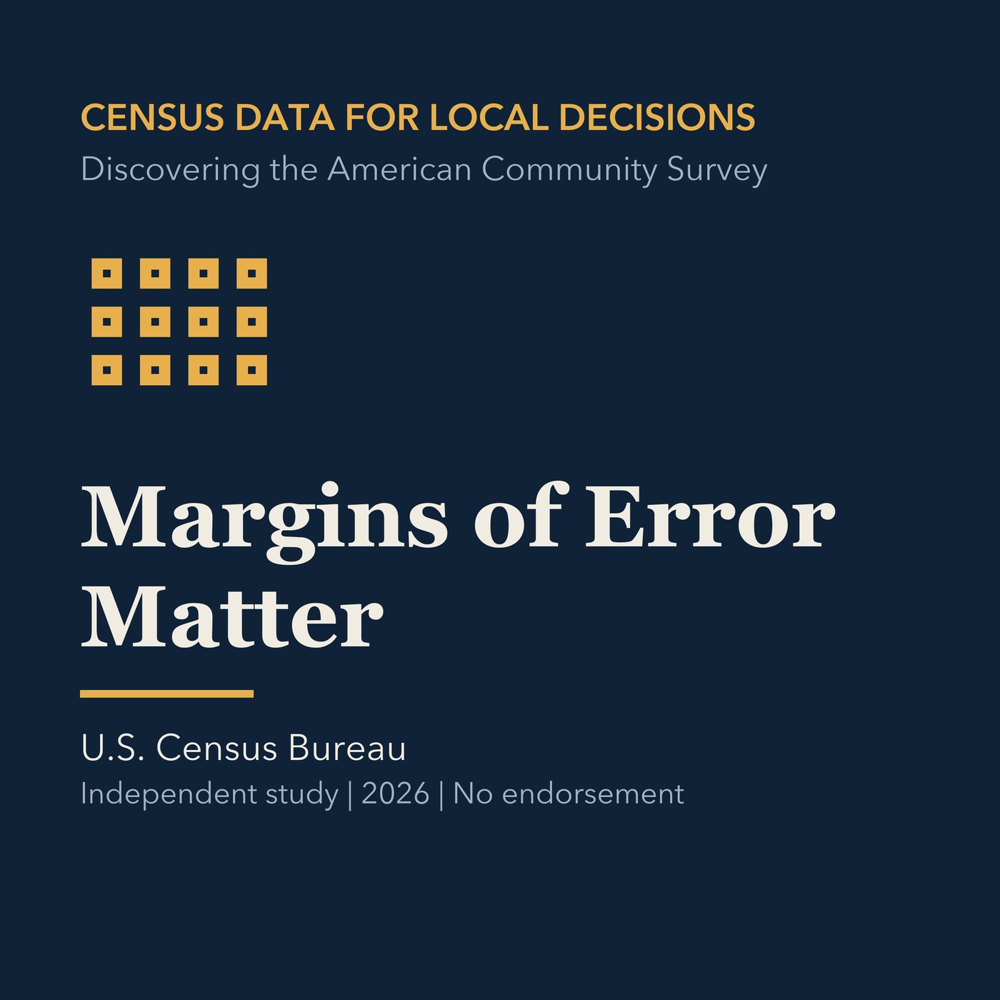

EPISODE 05
Margins of Error Matter
Uses margins of error and statistical testing to avoid false precision.

- Stable GUID
8e489b75-24e7-58bb-8ba3-47fcff3bdc1c- Release
- census-academy-v2026.3
- SHA-256
a2afb64ae126aca4938c77957260f33c87b8685d0ef72a94f4025c20415d98bb